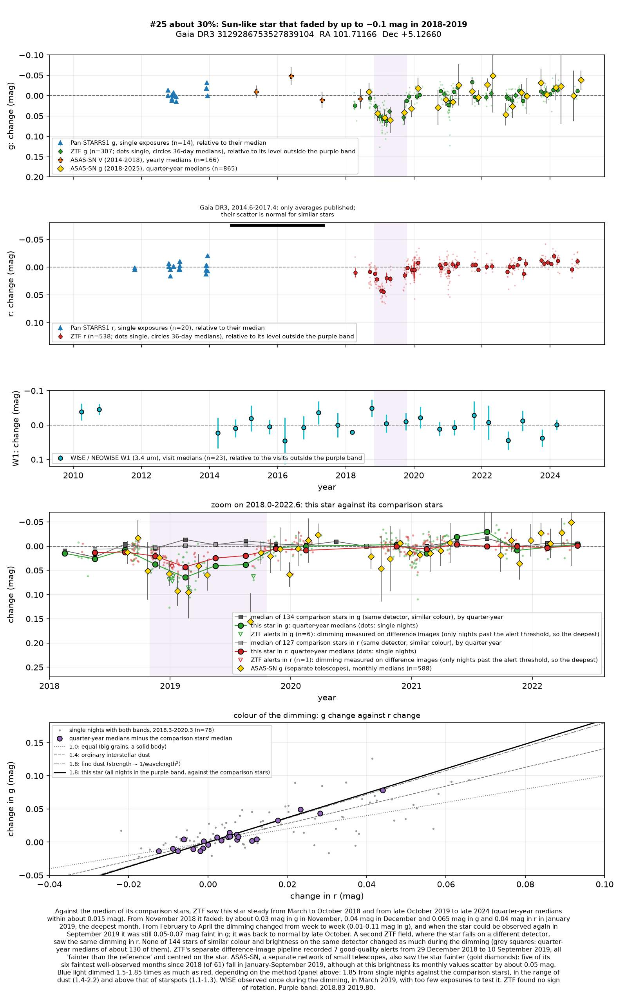
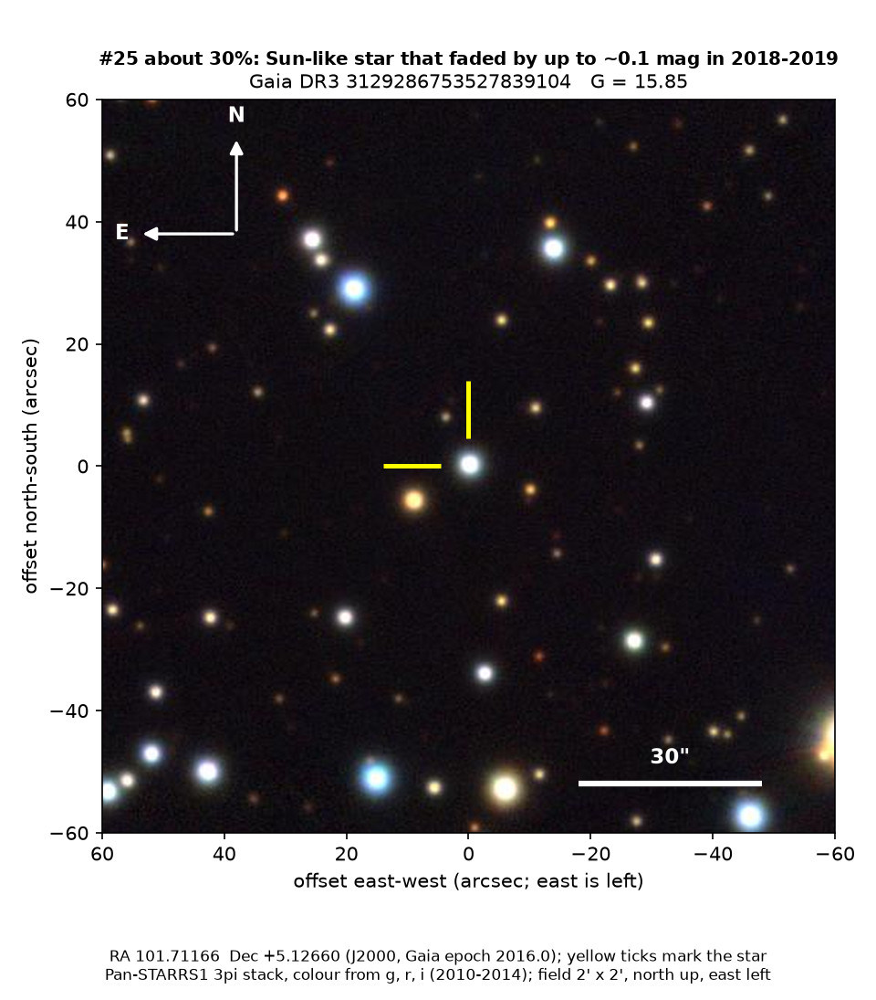
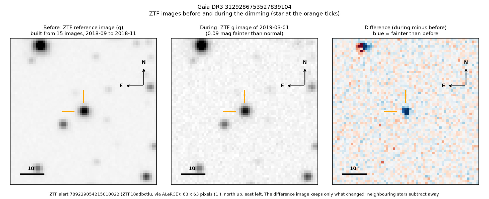

Professor of Mathematics
Paata Ivanisvili
Department of Mathematics, University of California, Irvine

Candidate 25: a Sun-like star that faded for most of a year in 2018 and 2019
Why this estimate. The dimming is almost certainly real: ZTF (the Zwicky Transient Facility, a survey telescope at Palomar Observatory in California) recorded it on two separate fields, on different detectors, and ASAS-SN (a worldwide network of small telescopes) also saw the star fainter in those months. The star is quiet and shows no rotation, and its green light dimmed more than its red, by more than starspots would cause, as dust does. The estimate is not higher because the star is faint for ASAS-SN and blended there with a neighbour, so that confirmation is noisy; because only ZTF measured the colour; because the single infrared visit during the dimming is too uncertain and NASA’s TESS space telescope did not observe then; and because there is no spectrum.
How to read the pictures. The finder chart shows a patch of sky two arcminutes across, about a fifteenth of the Moon’s width, with north up and east to the left. The star sits between the two yellow ticks, and the white bar is 30 arcseconds long. On a light curve the vertical axis is magnitude, a brightness scale on which larger numbers mean fainter stars, and it is drawn so that down means fainter. Purple shading marks the dimming. Each survey uses slightly different filters, so each is compared with its own normal level. The ZTF pictures show ZTF’s reference image of the star, an image taken during the dimming, and the difference between the two, in which only what changed remains: blue means fainter and red brighter.

What changed. The star is a Sun-like star in Monoceros, about 1,450 parsecs (4,700 light-years) away; Gaia’s models give it nearly the Sun’s temperature, size and luminosity, in the long, hydrogen-burning main part of its life. It was normal until the end of October 2018, and earlier surveys from 2010 to 2018 show nothing unusual. In November 2018 it began to fade, and January 2019 was the deepest month. From February to April the depth changed from week to week, between about 0 and 0.11 magnitudes in green light. From May to August the star is too close to the Sun for ZTF; in early September it was still faint, and it recovered over four to six weeks, staying normal from late October 2019. In all it lost up to about 9 per cent of its green light and 5 per cent of its red. Five of ASAS-SN’s six faintest well-observed months fall in the dimming.
Why it might matter. Dust passing in front of the star is the likeliest cause. Green light dimmed 1.5 to 1.85 times as much as red, above the 1.1 to 1.3 of starspots and in the range of dust (1.4 for ordinary interstellar dust, 1.8 to 2.2 for fine dust). The star is also quiet: its hydrogen-alpha line and ultraviolet light show no magnetic activity, and ZTF found no rotation in six seasons, so spots dimming it by 6 to 10 per cent for most of a year would be very unusual. The star’s place on the main sequence, its motion and its lack of infrared excess rule out a young star with a dusty disc; an eclipse by a companion star would be shorter and regular; and two ZTF fields and a second survey make an instrumental fault unlikely. The shape of the dimming points to an uneven cloud, larger than the star, perhaps a dusty disc around the star or an unseen companion, as in epsilon Aurigae. A spectrum would settle what kind of star it is.
No record of the dimming could be found: SIMBAD has no object within 10 arcseconds, Gaia DR3 gives the star no variability entry, and VSX (the variable-star index) and the other variable-star catalogues checked do not include it. It is not among the dimming stars of Tzanidakis et al. (2025), and there is no Transient Name Server entry, Gaia alert or paper giving its Gaia number. ZTF’s alert system holds only machine-generated classifications.
- Star
- Gaia DR3 3129286753527839104, a Sun-like star of type G
- Location
- RA 101.71166°, Dec +5.12660° (J2000), in Monoceros, 1.3 degrees north of the Milky Way’s mid-plane
- Distance
- about 1,450 parsecs (4,700 light-years)
- Brightness
- Gaia G = 15.85, far too faint for the eye or a small telescope
- Probability
- This candidate is unconfirmed. The percentage under the title is an estimate of the chance that it is a real, previously unrecorded case of the kind described. The estimate has not been checked by outside experts. See the introduction to all fifty-eight candidates.
- Caveat
- There is no spectrum, so the star’s type and age rest on Gaia’s models, and the colour comes from ZTF alone. From May to August 2019 only three ASAS-SN measurements cover the dimming. Several other stars that dimmed in the same survey data did so in 2018 and 2019, but all of them lie in other parts of the sky, on other ZTF fields.

